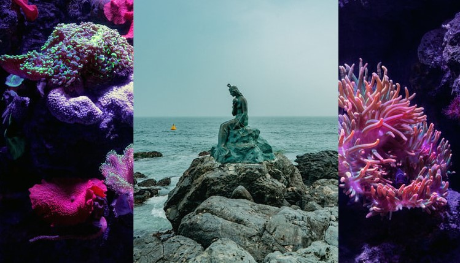

It’s an element that represents the feelings, intuition, and emotional side. Water is directly linked with femininity because as it provides life.
The same way that the west portrays death and the transition to arrive it, the Water transfer this essence too, since it’s in a constant change (physical states). For representing an aspect of passage, this element looks nightfall – when sunset is coming, there is a convert of Sun’s shine to night’s darkness, carrying the light’s death -. Moreover, the Season is Autumn, which follows the same principle about transition (Autumn is between Summer and Winter).
The cardeal wind of Water is west, showing its characteristics: psych abilities, and the emotional wave decontrol. The cold and fresh colors, like blue and gray, are Water’s correspondences too. There are connections between Water and the rivers, lagoons, streams, dolphins, fishes, uterus, blood, and taste.
Connect with the Water feelings it into you; wet yourself, feel the waves. Plunge in!
They are Water elementals, so, are guardians of the West Tower. This element has a stronger connection with our femininity; then, it's more common that these magical beings are women, but there are newts, too.
They are souls of nature; you may find them in oceans, rivers, lagoons, waterfalls, seas, etc. Besides, undines are great listeners, helping us with intuition stimulus, creativity, and foreboding.
We have had an undine protecting us since we were born. The imbalance in us may cause emotional problems, coldness, distrust, vulnerability, also high indices of sensuality and passion.
The connection with undines happens through waters; you need to feel the energies and waves. The guardians will take care and welcome you; you can receive and thank them.
| key words | emotions, intuition, feminine, love, fragility, spirituality, passive |
| colors | blue, purple, grey, silver |
| direction | west |
| time | nightfall, dusk or evening |
| season | autumn |
| tools | caldrons, sheals, a cup of water, chalice |
| astrology | Cancer, Scorpio, Pisces and Moon |
| herbs | lotus, chamomile, apple, myrrh, rose, myrtle |
| crystals/stones | aquamarine, sodalite, lapiz lazuli, amethyst, opal |
Pay attention! All content is based on my studies and particular positioning (of a beginner witch), so you must not be locked only it; search in different websites and books, make your own path.